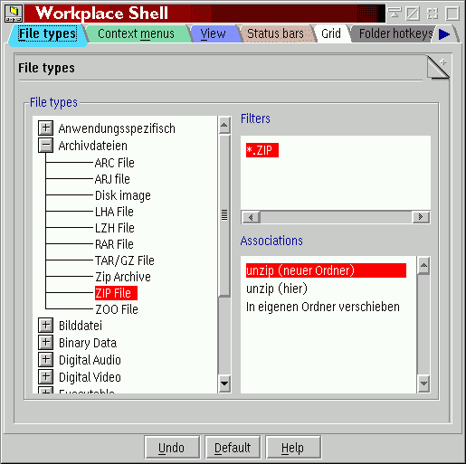

Wie Sie vielleicht wissen, ordnet die WPS Programme Datendateien standardmäßig mittels zweier Mechanismen zu: "Zuordnung über Dateityp" und "Zuordnung über Dateifilter".
Ist &xwp;s erweiterte Dateizuordnung aktiviert, so gibt es nur Zuordnungen über Dateitypen.
Da jedoch bei den meisten Dateien kein expliziter Dateityp gesetzt ist (was auf der Seite "Typ" im Einstellungsnotizbuch einer Datei möglich ist), ordnet &xwp; Dateiobjekten automatisch Dateitypen nach Dateifiltern zu. So erhalten Sie das beste zweier Welten (Dateitypen und Dateifilter) auf logischere Weise.
Wozu ist dies also gut?
Zunächst einmal finde ich den Standardassoziationsmechanismus der WPS etwas häßlich, wenn Zuordnungen sowohl über Dateifilter als auch Dateitypen zugewiesen werden. Die neue Herangehensweise ist hier logischer.
Zweitens, und dies ist am wichtigsten, erlaubt &xwp; es Ihnen, Dateitypenhierarchien zu erstellen. Beispielsweise gibt es viele Dateitypen, die auch wirklich "plain text" Dateien sind (z.B. "C Code" oder "HTML" Dateien), so daß jeder Editor, der "plain text" lesen kann, auch diese Dateitypen lesen können sollte.
Bis jetzt mußten Sie denselben Editor all diesen Dateitypen zuordnen. Mit &xwp; können Sie nun beliebige Typen als "Subtypen" von "plain text" definieren, und dieser Subtyp wird dann die für den Stammtypen definierten Zuordnungen erben.
Dies kann auf der neuen Seite "Dateitypen" des "Workplace Shell"-Objektes vorgenommen werden (wenn die erweiterten Zurordnungen aktiviert wurden):

Zur Definition von Dateityphierarchien ziehen und übergeben Sie einfach Dateitypen
im Baum "Dateitypen" an einen anderen Dateityp.
&xwp; erlaubt es, die alten Dateifilter in die neuen Zuordnungen zu importieren.
Dazu klicken Sie mit der rechten Maustaste in das Feld "Filter" und wählen "Importieren"
aus.